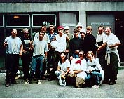

Bike Ride USA Journal
Day 48 Charter to Robs 80 miles I am back on the Bicentennial Route again. I really road over 100 miles since I got lost twice. Southern Illinois is beautiful. It has rolling hills, the yards are well kept, and the people are waving again. They didn't do that in Missouri. Those were angry drivers in fast cars. I first stopped at this one dive campground (the only one on the map) and took a shower. No one was there to collect my money so I decided to leave and take my camping chances somewhere else. I ended up at a new campground outside of Robs. It was a clean campground with grass sites and very nice restrooms and showers. . It was late so the office was closed. I took another shower and sat for dinner. During dinner a camping family came by and offered me some watermelon. 2 huge pieces. As I ate it and my dinner they all sat with me and talked. (This road magic is wonderful. Maybe I should shower less, shave less, and walk in dirty clothes more often.Day 49 Robs to Clay 75 miles. Cool! I went to pay for my site this morning and the owners said don't worry about it. I struggled the whole ride. I don't think it was the heat even though it was over 90 but man I am hurting. There was little to see today along the route so maybe I just got bored. I made arrangements to camp at the city park with the police. Rob and Karen pulled up during dinner and we all had dinner together. Ron a writer and Karen a teacher. During dinner we engaged in conversation with several locals one of which bought us our dinners. The town Mayor was one of the locals. He offered for us to shower and stay at his home. Life just works for the best.
| Taking a ferry across a Kentucky River |
Day 51 MacDaniels to Mammoth Cave. 80 miles. The first part of the day was chasing Rob and Karen since I heard they were only about 5 miles ahead of me. After about 40 miles I knew I had lost them for good when the last café before the Mammoth Cave turnoff was closed. They went straight and I went to the cave. The ride to the caves was hilly and loaded with barking and chasing dogs. I pulled into camp late and tried to get reservations on Wild Cave tour. 6 hours of climbing and crawling through areas the general public would never go. It was sold out but I at least talked to one of the guides and he would see what he could do. At camp that night I had a couple of sodas with some campers.
|  |
| Fellow Cavers at Mamath Cave Kentucky |
| Anne-Marie and Ian |
Day 54 27 miles to Bardstown I got a real late start since I waited with the couple so we all could leave together. On the way I stopped at one of Lincoln's boyhood homes where I met up with a local biking club. We road together for about 5 miles until they turned off. They just couldn't hang with the big guy. I was just too fast for them. Yeah!!!. I arrived in Bardstown about 1:00 and bought my ticket to the Steven Foster Story. Gary from Mammoth Cave was sitting behind the desk, comped my ticket then gave me tour of the grounds. The play was not until 8 so I took the bus tour of the town and walked through the Civil War Museum. I headed for camp and shared a site with an Australian, Jason who was traveling the world and I also met 2 guys from CA who were traveling the States by van. At 7, I got into my best T-shirt and least dirty shorts and made my way to the play. Needless to say I really enjoyed it since I knew many of the dancers actors and staff. Following the show I went backstage and met them all, talked with them for almost and hour. Katie and Gary played a large part in my feeling welcome. This is what traveling is about. Here I was, in town for 1/2 day and I meet and befriended the cast of the biggest event to city has to offer.
Day 58 Bardstown to Perryville. 50 miles. I got another late start since I stopped at library to use the computer. By the time I got to the Makers Mark Distillery (bourbon) it was already 1:00. By the time I left it after the tour and talking to a young party of 4 and (getting a care package) it was almost 4:00. I made it to Perryville and camped at the State Park. (site of the Perryville Battle) I was only aloud to camp out of sight so I camped way at the top of a hill. I ended up eating PB and J sandwiches because my matches got wet in the rainstorm today.
| Back to Top |
|---|